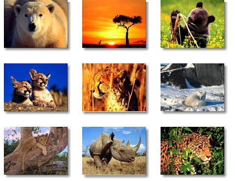
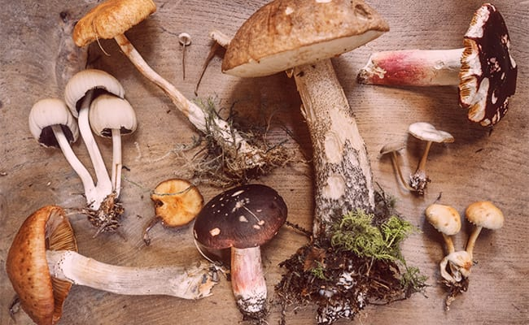

Biología
Definición
Es la ciencia que estudia el origen, la evolución y
las características de los seres vivos, así como sus
procesos vitales, su comportamiento y su interacción
entre sí y con el medio ambiente.
Importancia
Nos ayuda a entender, valorar y cuidar la vida.
La biología es una disciplina importante pues
mediante ella podemos develar los misterios de
la vida tal y como la conocemos, incluido su origen
(y el nuestro propio) y las leyes que la fundamentan.
Niveles de organización ecológica
Individuo: se trata de seres vivos, no necesariamente animales, que muchas veces son funcionales y pueden reaccionar a estímulos o en ocasiones incluso llevar a cabo acciones complejas.
Población: agrupación de individuos de la misma especie que conviven o que se organizan de manera conjunta para sobrevivir en un momento determinado y en un lugar concreto
Comunidad: conjunto de poblaciones de diferentes especies, y que interactúan entre sí en una zona concreta.
Ecosistema: entorno físico extenso caracterizado por fenómenos que van más allá de la existencia de seres vivos, como la temperatura, el nivel de luminosidad, las precipitaciones, etc.
Bioma: categoría que engloba a varios ecosistemas que presentan algunas similitudes entre sí
Biosfera: es el nivel de organización ecológica más grande, y abarca todo el planeta, compuesto por el encaje de los diferentes biomas.
3 Ramas de la biología
| Zoología: |
Se encarga del estudio de los animales.

|
| Micología: |
Es el estudio de los hongos,
microorganismos eucarióticos que
evolucionaron de manera sucesiva (en tandem) con
el reino animal.

|
| Microbiología: |
Es el estudio de aquellos seres vivos pequeños
cuyo tamaño está por debajo del alcance del ojo
humano.
|
Preguntas